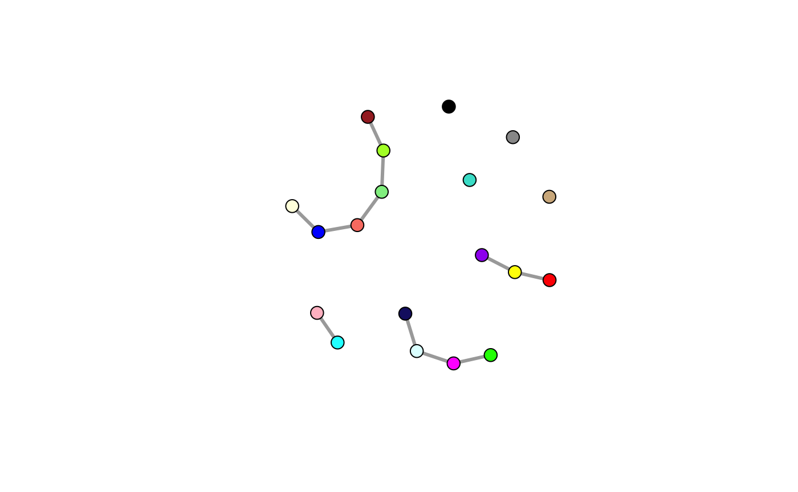

Structure Learning Constraints
constraints.RmdTo aid in the inference of networks with small sample sizes, we apply biolgically sensible constraints to learning the network structure. To find constraints for the networks, we first establish a network structure in a lower dimensional space using zero-order correlation between genes, which can be computed with few samples.
library(shine)Simulated Data
As an example, we generate an undirected scale-free network using the Barabási–Albert model with 300 nodes (n) and simulate 100 samples (p) that follow a multivariate normal distribution.

Constraint Methods
We use a specific version of the Weighted Gene Co-Expression Analysis method to identify gene modules where are clustered by the similarity (measured by biweight midcorrelation) and hierarchically clustered into gene modules of tightly co-expressed genes. Establishing gene modules captures coordinated co-expression of genes in a network that approximately follows a scale free topology, as do most biological networks, however direct gene-gene connections are abstracted away.
wgcna <- mods.detect(eset, min.size=5, cores=3, do.plot=TRUE)

Isolated Modules
wgcna$mods$grey <- NULL
str(wgcna$mods)List of 19
$ pink : chr [1:16] "1" "3" "4" "8" ...
$ lightcyan : chr [1:8] "2" "5" "6" "7" ...
$ tan : chr [1:11] "11" "98" "161" "229" ...
$ greenyellow : chr [1:11] "12" "21" "29" "34" ...
$ lightgreen : chr [1:7] "13" "24" "30" "33" ...
$ green : chr [1:20] "15" "17" "18" "67" ...
$ yellow : chr [1:21] "16" "36" "45" "57" ...
$ midnightblue: chr [1:8] "19" "23" "27" "35" ...
$ cyan : chr [1:8] "25" "26" "204" "205" ...
$ magenta : chr [1:14] "28" "107" "128" "144" ...
$ turquoise : chr [1:36] "31" "40" "44" "63" ...
$ salmon : chr [1:10] "39" "99" "100" "108" ...
$ blue : chr [1:31] "42" "54" "70" "78" ...
$ black : chr [1:16] "49" "62" "69" "76" ...
$ brown : chr [1:27] "50" "51" "52" "55" ...
$ purple : chr [1:12] "79" "154" "201" "215" ...
$ grey60 : chr [1:7] "85" "153" "158" "160" ...
$ red : chr [1:16] "88" "105" "118" "120" ...
$ lightyellow : chr [1:5] "124" "256" "277" "280" ...The Markov blanket for a node in a graphical model contains all the variables that shield the node from the rest of the network. This means that the Markov blanket of a node is the only knowledge needed to predict the behavior of that node and its children.
In our case, for each gene, its markov blanket includes genes within its own module. These blankets makeup the constraint on the network, which vastly reduces the complexity of the search space. If the constraints prevent an edge between two genes, there will be a zero-entry in the matrix, otherwise the probability of an edge will be 0.5, assuming no other prior information is being incorporated.
blanket <- blanket.new(wgcna$genes)
blanket <- blanket.lift(blanket, wgcna$mods)Here we relay the modules back on the true graphs structure…
V(g)$color <- wgcna$colors
model.plot(g, colors=TRUE)
blanket.cred(blanket)[1] 16.22871Fuzzy Modules
mods.plot(wgcna$dat, wgcna$mods, wgcna$colors, size=2)
mod.plot(wgcna$dat, wgcna$mods, mod="green", wgcna$colors, size=2)
fuzzy.plot(wgcna$dat, wgcna$mods, mod="green", size=2)
fuzzy <- fuzzy.mods(wgcna$dat, wgcna$mods)
blanket <- blanket.new(wgcna$genes)
blanket <- blanket.lift(blanket, fuzzy)
blanket.cred(blanket)[1] 6.375222Metanet
Using a meta network of co-regulated gene modules, we can represent each module as an eigenvector, which is the first principle component (PC1) of the expression values of genes within a given module, resulting in a module x sample matrix. Within this lower-dimensional representation of the network, we establish conditional independence between modules by measuring the pairwise partial correlation.
wgcna$mods$grey <- NULL
wgcna$eigengenes$grey <- NULL
# Estimate meta network
metanet <- bdg.metanet(wgcna$eigengenes, mpl=TRUE, iter=25000, print=5000, cores=3)25000 iteration is started.
Iteration 5000
Iteration 10000
Iteration 15000
Iteration 20000
Iteration 25000 V(metanet$ig)$color <- names(V(metanet$ig))
plot(metanet$ig, vertex.size=10, edge.width=3, vertex.label=NA)
blanket <- blanket.new(wgcna$genes)
blanket <- blanket.lift(blanket, wgcna$mods, metanet$edges)
blanket.cred(blanket)[1] 9.096304